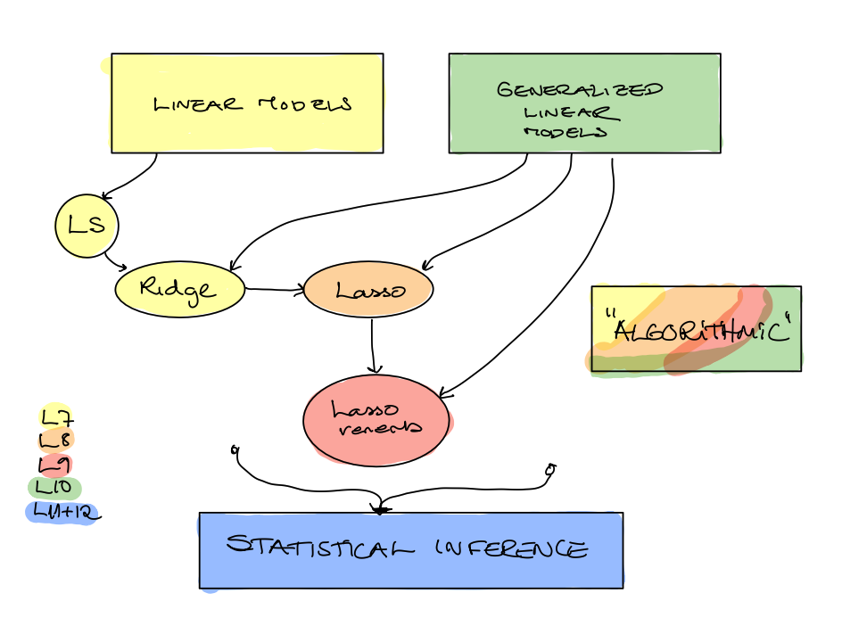
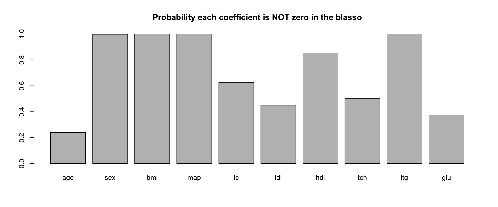
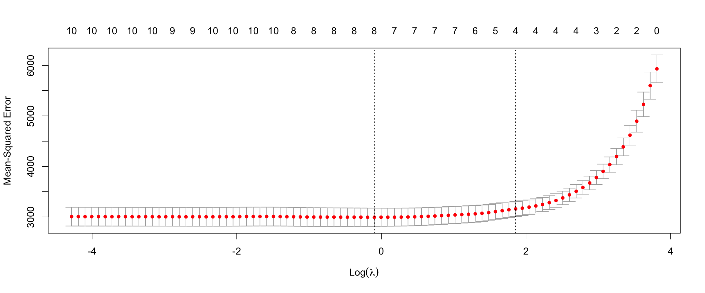
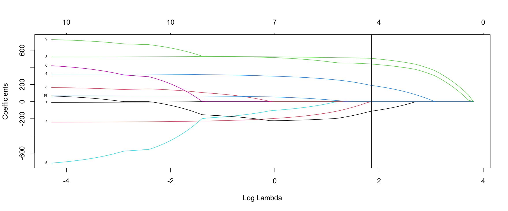

MA8701 Advanced methods in statistical inference and learning
W6: Statistical inference for penalized GLM methods
Before we begin
Outline
- Prediction vs statistics inference: what are the aims?
- Sampling distributions
- Debiased lasso
- Bayesian lasso
- Boostrapping
- Sample splitting
- Inference after selection (forward regression example, polyhedral result, PoSI)
- Reproducibility crisis and selective inference
- Conclusions
Literature
Main source:
- [HTW] Hastie, Tibshirani, Wainwright: “Statistical Learning with Sparsity: The Lasso and Generalizations”. CRC press. Ebook. Chapter 6.0, 6.1, 6.2, 6.4, 6.5. (Results from 6.3 through Taylor and Tibshirani (2015))
Also: brush up on bootstrap intervals from TMA4300, where Givens and Hoeting (2013) is on the reading list. See specifically chapter 9 (9.2.1 and 9.3 will be used here). NTNU-access to the full book if you are on vpn.
Secondary sources:
Short note on multiple hypothesis testing in TMA4267 Linear Statistical Models, Kari K. Halle, Øyvind Bakke and Mette Langaas, March 15, 2017.
Single/multi-sampling splitting part of Dezeure, Bühlmann, Meier, Meinshausen (2015). “High-Dimensional Inference: Confidence Intervals, p-Values and R-Software hdi”. Statistical Science, 2015, Vol. 30, No. 4, 533–558 DOI: 10.1214/15-STS527 (only the single/multiple sample splitting part in 2.1.1 and 2.2 for linear regression, and using the method in practice). Or Chapter 11 of Bühlmann and de Geer (2011)
Taylor and Tibshirani (2015): Statistical learning and selective inference, PNAS, vol 112, no 25, pages 7629-7634. (Soft version of HTW 6.3.2)

Statistical inference
We have now heard about the South African heart disease data, and we will also look at at a regression problem with prediction of disease progression in diabetes.
Prediction vs statistical inference
Prediction
- Predict the value of the progression variable for a person with diabetes.
- Predict the probability of heart disease for a person from the population in the South African heart disease example.
Inference
- Assess the goodness of the prediction (MSE, error rate, ROC-AUC) - with uncertainty.
- Interpret the GLM-model - which covariates are included?
- Confidence interval for the model regression parameters.
- Testing hypotheses about the model regression parameters.
Statistics vs Machine learning
Known sampling distributions
For the linear regression and logistic regression we know the sampling distribution of the regression coefficient estimators.
Then it is easy to construct confidence intervals and perform hypothesis tests.
What are the known results?
Multiple linear regression
\[{\boldsymbol Y=X \boldsymbol{\beta}}+{\boldsymbol \varepsilon}\] where \(\varepsilon\sim N_N({\boldsymbol 0},\sigma^2{\boldsymbol I})\) (independent observation pairs).
\[\hat{\beta}_{\text{LS}}=({\boldsymbol X}^T{\boldsymbol X})^{-1} {\boldsymbol X}^T {\boldsymbol Y}\] with \(\hat{\beta}_{\text LS}\sim N_{p}(\beta,\sigma^2({\boldsymbol X}^T{\boldsymbol X})^{-1})\).
Restricted maximum likelihood estimator for \(\sigma^2\): \[\hat{\sigma}^2=\frac{1}{N-p}({\boldsymbol Y}-{\boldsymbol X}\hat{\beta}_{\text LS})^T({\boldsymbol Y}-{\boldsymbol X}\hat{\beta}_{\text LS})=\frac{\text{SSE}}{N-p}\] with \(\frac{(N-p)\hat{\sigma}^2}{\sigma^2} \sim \chi^2_{N-p}\).
Statistic for inference about \(\beta_j\), \(c_{jj}\) is diagonal element \(j\) of \(({\boldsymbol X}^T{\boldsymbol X})^{-1}\). \[T_j=\frac{\hat{\beta}_{\text LS,j}-\beta_j}{\sqrt{c_{jj}}\hat{\sigma}}\sim t_{N-p}\]
or, inference can be done asymptotically and then replace the \(t\) with the normal distribution.
\(T_j\) is the starting point for constructing CIs for \(\beta_j\) and testing hypotheses about \(\beta_j\).
Observe: the least squares estimator is unbiased!
Logistic regression
\(\hat{\boldsymbol{\beta}}\) is now not on closed form, but asymptotically when \(N \rightarrow \infty\) \[\hat{\boldsymbol\beta} \approx N_{p}(\boldsymbol\beta,(\boldsymbol X^T\hat{\boldsymbol{W}}\boldsymbol X)^{-1})\] where \(\boldsymbol W=diag(\hat{\pi}_i(1-\hat{\pi}_i))\), so that inference can be based on the asymptotic normality of each element of the regression estimate vector.
Observe: the logistic regression parameter estimator is unbiased.
Confidence interval — generic set-up
Set-up
- We have a random sample \(Y_1,Y_2,\ldots,Y_N\) from
- some distribution \(F\) with some (unkonwn) parameter \(\theta\).
- Let \(y_1,y_2,\ldots,y_N\) be the observed values for the random sample.
Statistics
- We have two statistics \(\hat{\theta}_L(Y_1,Y_2,\ldots,Y_N)\) and \(\hat{\theta}_U(Y_1,Y_2,\ldots,Y_N)\) so that
\[P(\hat{\theta}_L(Y_1,Y_2,\ldots,Y_N)\le \theta \le \hat{\theta}_U(Y_1,Y_2,\ldots,Y_N))=1-\alpha\] where \(\alpha\in [0,1]\)
Confidence interval
The numerical interval \[[\hat{\theta}_L(y_1,y_2,\ldots,y_N),\hat{\theta}_U(y_1,y_2,\ldots,y_N)]\] is called a \((1-\alpha)\) 100% confidence interval.
Sampling distribution for ridge and lasso?
Multippel linear ridge regression
\[ \hat{\beta}_{\text{ridge}}=({\boldsymbol X}^T{\boldsymbol X}+\lambda {\boldsymbol I})^{-1} {\boldsymbol X}^T {\boldsymbol Y}\]
\[\hat{\beta}(\lambda)_{\text{ridge}} \sim N \{ (\boldsymbol{X}^T \boldsymbol{X} + \lambda \boldsymbol{I}_{p})^{-1} \boldsymbol{X}^T \boldsymbol{X} \, \beta,\]
\[\sigma^2 ( \boldsymbol{X}^T \boldsymbol{X} + \lambda \boldsymbol{I}_{p} )^{-1} \boldsymbol{X}^T \boldsymbol{X} ( \boldsymbol{X}^T \boldsymbol{X} + \lambda \boldsymbol{I}_{p} )^{-1} \}.\]
\[\text{df}(\lambda)=\text{tr}({\boldsymbol H}_{\lambda})=\text{tr}({\boldsymbol X}({\boldsymbol X}^T{\boldsymbol X}+ \lambda {\boldsymbol I})^{-1}{\boldsymbol X}^T)=\cdots=\sum_{j=1}^p \frac{d_j^2}{d_j^2+\lambda}\]
- What can we do with that?
- What if the design matrix is orthogonal, does that help?
Logistic ridge
For large sample sizes the ridge logistic regression estimator is approximately multivariate normal (Wieringen (2021) Section 5.3).
\[\hat{\boldsymbol\beta}(\lambda) \approx N_{p}(\boldsymbol\beta-\lambda (\boldsymbol X^T\hat{\boldsymbol{W}}\boldsymbol X+\lambda \boldsymbol I)^{-1}\boldsymbol \beta),\] \[(\boldsymbol X^T\hat{\boldsymbol{W}}\boldsymbol X+\lambda \boldsymbol I)^{-1}-(\boldsymbol X^T\hat{\boldsymbol{W}}\boldsymbol X+\lambda \boldsymbol I)^{-2})\] This is based on the asymptotic normality of the score function (gradient of the loglikelihood - here the penalized loglikelihood).
- What can we do with that?
- What if the design matrix is orthogonal, does that help?
Lasso
Some results using approximations to ridge (for mean and variance, see Wieringen (2021) p 97), but else no parametric version of sampling distribution known.
What is our aim?
Penalized estimation: reduce variance by introducing (strong) bias.
The squared bias then is a major part of the mean squared error, and the variance is thus a minor part.
But, do we need to use the ridge or lasso estimator to construct a confidence interval for \(\boldsymbol \beta\) or test if \(\beta_j=0\)?
- \(p>N\)
- \(p<N\)?
Debiased (desparsified) lasso
(HTW Section 6.4)
\[\hat{\beta}^d=\hat{\beta}_{\lambda}+\frac{1}{N}{\boldsymbol M}{\boldsymbol X}^T(\boldsymbol Y-\boldsymbol X \hat{\beta}_{\lambda})\]
the matrix \({\boldsymbol M}\) is some approximation to the inverse of \[\hat{\boldsymbol \Sigma}=\frac{1}{N}{\boldsymbol X}^T{\boldsymbol X}\] Use the debiased estimator to form CI from:
\[\hat{\beta}^d \sim N(\beta,\frac{\sigma^2}{N}{\boldsymbol M}\hat{\boldsymbol \Sigma}{\boldsymbol M}^T)\]
Interpretation of debiasing: assume we want to minimize the residual sum of squares using an approximate Newton step starting at the lasso estimator.
Two solutions are based on
- neighbour-based methods to impose sparsity
- optimization problem to get \(\hat{\boldsymbol \Sigma}\hat{\boldsymbol M}\approx \boldsymbol I\) while the variance of the debiased estimator is small.
See Hastie, Tibshirani, and Wainwright (2015) page 159 for references to these solutions.

Conclusion
This is absolutely not straightforward.
The adaptive and biased nature of the estimation procedures makes it challenging to perform inference.
- We will discuss other (in addition to the debiasing) solutions to finding confidence intervals for regression parameters for lasso, and for constructing \(p\)-values for testing hypotheses about the regression parameters.
- We will address some philosophical principles behind inference
- and mention topics that can be studied further for the interested student!
Warning: there seems not to be consensus, but many interesting approaches and ideas that we may consider.
Diabetes data
In a medical study the aim was to explain the ethiology of diabetes progression. Data was collected from \(n=442\) diabetes patients, and from each patient the following measurements are available:
age(in years) at baselinesex(0=female and 1=male) at baseline- body mass index (
bmi) at baseline - mean arterial blood pressure (
map) at baseline - six blood serum measurements: total cholesterol (
tc), ldl cholesterol (ldl), hdl cholesterol (hdl),tch,ltg, glucoseglu, all at baseline, - a quantitative measurement of disease progression one year after baseline (
prog)
All measurements except sex are continuous. There are 10 covariates.
The response is the disease progression prog - thus a regression problem.
Data can be
- downloaded from https://web.stanford.edu/~hastie/StatLearnSparsity_files/DATA/diabetes.html in three variants: raw, standardized and 442 \(\times\) 64 matrix with quadratic terms (not used here).
- Or, loaded from the
larspackage, that is automatically loaded in themonomvnpackage (whereblassois found).
Bayesian ridge and lasso
(HTW 6.1 for lasso, WNvW Section 5.5 and 6.6)
For penalized models there exists Bayesian equivalents. We will here focus on the multiple linear regression model.
Bayesian set-up
In the Bayesian statistics the regression parameters \(\beta\) are random quantities, and in addition to the likelihood also a prior for the regression parameters (and other parameters) are needed. When a conjugate prior the posterior distribution may be derived analytically.
Multiple linear regression: distribution of response - where we for simplicity assume that we have centred covariates and centred response (so no intercept term)
\[ {\boldsymbol y}\mid \beta, \sigma \sim N({\boldsymbol X}\beta,\sigma^2 {\boldsymbol I})\] This gives the likelihood:
\[ L(\boldsymbol \beta \mid \boldsymbol y,\boldsymbol X, \sigma) \propto (\sigma^{-N/2}) \exp[- \frac{1}{2 \sigma^2}(\boldsymbol y -\boldsymbol X \boldsymbol \beta)^T(\boldsymbol y -\boldsymbol X \boldsymbol \beta)]\]
Prior for regression parameters (ridge)
In Part 1 we worked with multiple imputation and one method for drawing observations was the Bayesian linear regression.
We will use the same priors here, for the \(\sigma^2\) we use a inverse Gamma prior. For the regression coefficents a normal prior is used.
\[\beta \mid \sigma \sim \prod_{j=1}^p \sqrt{\frac{\lambda}{2 \sigma^2}}\exp(-\frac{\lambda}{2 \sigma^2}\beta_j^2)\]
Posterior for regression parameters (ridge)
\[ \beta, \mid \boldsymbol X, \boldsymbol Y \sigma^2 \propto \exp[-\frac{1}{2\sigma^2}](\boldsymbol \beta-\hat{\boldsymbol \beta}({\lambda}))^T ({\boldsymbol X}^T \boldsymbol X+\lambda \boldsymbol I)(\boldsymbol \beta-\hat{\boldsymbol \beta}({\lambda}))]\] The posterior mean is the ridge estimator \(\hat{\boldsymbol \beta}(\lambda)\).
Prior for regression parameters (lasso)
\[\beta \mid \lambda, \sigma \sim \prod_{j=1}^p \frac{\lambda}{2 \sigma}\exp(-\frac{\lambda}{\sigma}\lvert \beta_j \rvert)\]
This prior is called an i.i.d. Laplacian (or double exponential) prior.
Posterior for regression parameters (lasso)
It can be shown that the negative log of the posterior density for \(\beta \mid {\boldsymbol y}, \lambda, \sigma\) is (up to an additive constant)
\[\frac{1}{2\sigma^2} \Vert {\boldsymbol y}-{\boldsymbol X}\beta\Vert_2^2 +\frac{\lambda}{\sigma} \Vert \beta \Vert_1\]
Does this look familiar?
For a fixed value of \(\sigma\) and \(\lambda\) - the \(\beta\) giving the minimum of the negative log posterior is the lasso estimate where the regularization parameter is \(\sigma \lambda\).
The minimum negative log posterior will then be the same as the maximum log posterior - and the maximum of a distribution is called the mode of the distribution.
The lasso estimate is the posterior mode in the Bayesian model.

From Hastie, Tibshirani, and Wainwright (2015): a 95% posterior credibility interval covers zero.

Hastie, Tibshirani, and Wainwright (2015): MCMC with 10 000 samples.
A full Bayesian approach requires priors for \(\lambda\) and \(\sigma\), in addition to priors on the regression coefficient.
Markov Chain Monte Carlo MCMC is used efficiently sample realizations form the posterior distribution.
See Wieringen (2021) Chapter 2 for more on Bayesian regression and the connection to the ridge and Section 6.6 for connection to lasso.
Not only the point estimate
The posterior distribution gives the
- point estimates for the lasso (the mode of the distribution)
but
- also the entire joint distribution.

Hastie, Tibshirani, and Wainwright (2015): 10 000 samples from the posterior.
Diabetes example with blasso
Code
## code below copied from the help(blasso)
## following the lars diabetes example
data(diabetes)
attach(diabetes)
## Ordinary Least Squares regression
reg.ols <- regress(x, y)
## Lasso regression
reg.las <- regress(x, y, method="lasso")
## Bayesian Lasso regression
reg.blas <- blasso(x, y,verb=0)
Code
## plot the size of different models visited
#plot(reg.blas, burnin=200, which="m")
## get the summary
s <- summary(reg.blas, burnin=200)
Bootstrap
(HTW 6.2)
Procedure to find lasso estimate \(\hat{\beta}(\hat{\lambda}_{CV})\)
(Copied word by word from HTW page 142)
Refer to these 6 steps as \(\hat{\beta}(\hat{\lambda}_{CV})\)-loop
- Fit a lasso path to \((X, y)\) over a dense grid of values \(\Lambda=\{\lambda_l\}_{l=1}^{L}\).
- Divide the training samples into 10 groups at random.
- With the \(k\)th group left out, fit a lasso path to the remaining \(9/10\)ths, using the same grid \(\Lambda\).
- For each \(\lambda \in \Lambda\) compute the mean-squared prediction error for the left-out group.
- Average these errors to obtain a prediction error curve over the grid \(\Lambda\).
- Find the value \(\hat{\beta}(\hat{\lambda}_{CV})\) that minimizes this curve, and then return the coefficient vector from our original fit in step (1) at that value of \(\lambda\).
Observe:
- \(\lambda\)-path is the same for each run of the lasso
- the chosen \(\lambda\) is then used on the orginal data
Q: Is it possible to use resampling to estimate the distribution of the lasso \(\hat{\beta}\) estimator including the model selection (choosing \(\lambda\))?
Non-parametric (paired) bootstrap
- Let \(F\) denote the joint distribution of \((X,Y)\).
- The empirical \(\hat{F}\) is \(\frac{1}{N}\) for each observation \((X,Y)\) in our training data \((X_i,Y_i)\), \(i=1,\ldots,N\).
- Drawing from \(\hat{F}\) is the same as drawing from the \(N\) observations in the training data with replacement.
Now, we draw \(B\) bootstrap samples from the training data, and for each new bootstrap sample we run through the 6 steps in the \(\hat{\beta}(\hat{\lambda}_{CV})\)-loop.
- The result is \(B\) vectors \(\hat{\beta}(\hat{\lambda}_{CV})\).
- We plot the result as
- boxplots,
- proportion of times each element of \(\hat{\beta}(\hat{\lambda}_{CV})\) is equal 0.
Diabetes example


11 x 1 sparse Matrix of class "dgCMatrix"
s1
(Intercept) 152.13348
age .
sex -33.35229
bmi 508.13935
map 210.34606
tc .
ldl .
hdl -138.84433
tch .
ltg 444.59064
glu . Bootstrapping vs Bayesian lasso
The results from the Bayesian lasso on the proportion of times a coefficient is 0 and the boxplots are very similar to the results from the bootstrapping. The bootstrap seems to be doing the “same” as a Bayesian analysis with the Laplacian prior.
When the model is not so complex and the number of covariates is not too large (\(p\sim 100\)) the Bayesian lasso might be as fast as the bootstrapping, but for larger problems the bootstrap “scales better”.
For GLMs the Bayesian solution is more demanding, but the bootstrap is as easy as for the linear model.

Bootstrapt percentile CI
To construct a \((1-\alpha)\cdot 100\)% CI:
- order the bootstrap sample for the estimate of interest
- read off the \((1-\alpha/2)\cdot 100\) percetile
- \((\alpha/2)\cdot 100\) percentile
These are now the lower and upper limit of the CI.
Bootstrap BCa CI
See page 34 of Bootstrap confidence intervals in the master thesis of Lene Tillerli Omdal Section 3.6.2 and teaching material from TMA4300: Givens and Hoeting (2013) chapter 9.3. NTNU-access to the full book if you are on vpn.
Diabetes example
What if we calculated percentile bootstrap intervals - could we use that to say anything about the true underlying regression coefficients?
[1] "Ridge first then lasso" 2.5% 50% 97.5% 2.5% 50% 97.5%
Int.cept 147.08515 152.140842 157.48081 146.942231 152.17445 157.29619
age -30.29701 28.233633 84.43224 0.000000 0.00000 0.00000
sex -170.89169 -92.265146 -26.22187 -115.349163 0.00000 0.00000
bmi 232.35050 321.111896 421.01718 329.357643 469.97818 617.77346
map 140.21620 207.461944 278.29632 0.000000 151.40541 304.09469
tc -45.76264 2.724457 43.62582 -4.357653 0.00000 0.00000
ldl -91.46718 -35.412937 15.64376 -22.951886 0.00000 0.00000
hdl -206.89616 -157.552738 -109.32657 -218.711400 -80.79045 0.00000
tch 69.30617 119.322597 165.46347 0.000000 0.00000 51.93353
ltg 206.74238 276.466411 369.93742 283.107398 412.68911 556.78790
glu 61.07588 111.952224 168.07668 0.000000 0.00000 90.18665Medical example
(See Figures from study in class notes.)
Bootstrap CIs for \(\beta_j\)
Sadly, there are two main challenges:
- The percentile interval is not a good choice for biased estimators, and it is not clear if the bias-corrected accelerated intervals are better
- It has been shown that (for fixed \(p\)) the asymptotic (\(N\rightarrow \infty\)) distribution of the lasso has point mass at zero (which leads to that bootstrapping not having optimal properties).
The authors of the penalized package take the following view Section 6: A note on standard errors and confidence intervals in the Penalized user manual https://cran.r-project.org/web/packages/penalized/vignettes/penalized.pdf
“Unfortunately, in most applications of penalized regression it is impossible to obtain a sufficiently precise estimate of the bias. Any bootstrap-based calculations can only give an assessment of the variance of the estimates. Reliable estimates of the bias are only available if reliable unbiased estimates are available, which is typically not the case in situations in which penalized estimates are used.”
“It is certainly a mistake to make confidence statements that are only based on an assessment of the variance of the estimates, such as bootstrap-based confidence intervals do.”
Reliable confidence intervals around the penalized estimates can be obtained in the case of low dimensional models using the standard generalized linear model theory as implemented in lm, glm and coxph.”
Outline
- Prediction vs statistics inference: what are the aims?
- Sampling distributions
- Debiased lasso
- Bayesian lasso
- Boostrapping
WE are here now!
- Sample splitting
- Inference after selection (forward regression example, polyhedral result, PoSI)
- Reproducibility crisis and selective inference
- Conclusions
Sample splitting
What if we just split the data in two?
Linear regression or logistic regression.
Dataset with \(p\) covariates and \(N\) observations. Divided into a training set of size \(aN\) and a test set of \((1-a)N\), where \(a \in [0,1]\).
Training data used to decide on \(\lambda\) using CV - gives final model where some coefficients is set to 0 and some are shrunken. (The 6 steps.)
Test data:
- Fit ordinary LS or GLM model with only the non-zero lasso covariates
- present CI and \(p\)-values from LS
Group discussion: Is this ok? What is gained and what is lost?
From single to multiple hypotheses
In many situations we are not interested in testing only one hypothesis, but instead \(m\) hypotheses.
| Not reject \(H_0\) | Reject \(H_0\) | Total | |
|---|---|---|---|
| \(H_0\) true | \(U\) | \(V\) | \(m_0\) |
| \(H_0\) false | \(T\) | \(S\) | \(m - m_0\) |
| Total | \(m-R\) | \(R\) | \(m\) |
- Out of the \(m\) hypotheses tested, the (unknown) number of true null hypotheses is \(m_0\).
- \(V\): the number of type I errors (false positive findings) and
- \(T\): the number of type II errors (false negative findings).
- \(U\): the number of true null hypotheses that are not rejected and
- \(S\): the number of false null hypotheses that are rejected.
- \(R\): the number of hypoteses rejected for a specific cut-off
Observe: only \(m\) and \(R\) is observed!
Familywise error rate
The familywise error rate (FWER) is defined as the probability of one or more false positive findings
\[ \text{FWER} = P(V > 0) \] The number of false positive findings \(V\) is not known in a real life situation, but still we may find a cut-off on the \(p\)-value, called \(\alpha_{\text loc}\), that gives an upper limit to (controls) the FWER.
- Raw \(p\)-value, \(p_j\), the lowest nominal level to reject the null hypothesis.
- Adjusted \(p\)-value, \(\tilde{p}_j\), is the nominal level of the multiple (simultaneous) test procedure at which \(H_{0j}, j=1,\ldots,m\) is just rejected, given the values of all test statistics involved.
The adjusted \(p\)-values can be defined as \[\tilde{p}_j = \text{inf}\{\alpha \mid H_{0j}\text{ is rejected at FWER level } \alpha \}\]
In a multiple testing problem where all adjusted \(p\)-value below \(\alpha\) are rejected, the overall type I error rate (for example FWER) will be controlled at level \(\alpha\).
The Bonferroni method controls the FWER
Single-step methods controls for multiple testing by estimating one local significance level, \(\alpha_{\text{loc}}\), which is used as a cut-off to detect significance for each individual test.
The Bonferroni method is valid for all types of dependence structures between the test statistics.
The local significance level is \[\alpha_{\text loc}=\frac{\alpha}{m}\]
The adjusted \(p\)-value is \[ \tilde{p}_j =\min(1,m p_j)\]
Read more here if needed: Short note on multiple hypothesis testing
High-dimensional inference
(Dezeure, Bühlmann, Meier, Meinshausen, 2.1.1 + 2.2)
- The article has focus on frequentist methods for high-dimensional inference with confidence intervals and \(p\)-values in linear and generalized linear models.
- We will focus on linear models.
Set-up:
\[Y={\boldsymbol X} \beta^0 +\varepsilon\]
- \({\boldsymbol X}\) is \(n\times p\) design matrix
- \(Y\) is an \(n \times 1\) response vector
- \(\varepsilon\) is an \(n \times 1\) error vector, independent of \({\boldsymbol X}\) and i.i.d. entries with \(\text{E}(\varepsilon)_i)=0\).
- The number of parameters may be larger than the sample size (then the regression parameter is not identifiable in general).
The active set is \[S_0=\{ j; \beta_j^0 \neq 0,j=1,\ldots,p\}\] with cardinality (size) \(\lvert S_0 \rvert\).
Now: construct CI and \(p\)-values for individual regression parameters \(\beta_j^0\), \(j=1,\ldots, p\), and also with multiple testing adjustment.
Remark: We want inference for all coefficients - not only the ones that the lasso has selected.
- The lasso has desirable properties for estimating \(\beta^0\) in high dimensional models, in particular for prediction \({\boldsymbol X}\beta^0\) or a new response \(Y_{\text{new}}\).
- But, the distribution of the estimator is hard to characterize, and
- it has been shown that (for fixed \(p\)) the asymptotic (\(n\leftarrow \infty\)) distribution of the lasso has point mass at zero (which leads to that bootstrapping not having optimal properties).
For the situation \(p >> n\) extra assumptions are needed, called the compatibility condition on the design matrix, and this guarantees identifiability and socalled oracle optimality results for the lasso. However, this is reported to be unrealistic in practical situations.
Single-sample splitting
- Split the data into two (equal) halves, \(I_1\) and \(I_2\), no observations in common.
- \(I_1\) is used for model selection (with the lasso), with active variables in \(\hat{S}(I_1)\).
- The selected covariates in \(\hat{S}(I_1)\) is used for estimation in \(I_2\). To construct \(p\)-values, \(P_j\), for example use LS with \(t\)-tests. \(P\)-values for variables not selected is set to \(1\). Remark: then the number of covariates selected in \(I_1\) need be smaller than the sample size for \(I_2\).
- The raw \(p\)-values is corrected for multiple testing (Bonferroni method controlling FWER) \[ P_{\text{corr},j}=\min(P_j \cdot \lvert \hat{S} \rvert,1)\]
This avoids using the data twice! But, is very sensitive to the split - giving wildly different \(p\)-values=\(p\)-value lottery
How can this be amended?
Multiple-sample splitting
The single-sample splitting routine is run \(B\) times giving \(P_{\text{corr},j}^{[b]}\) for \(b=1,\ldots,B\) and \(j=1,\ldots,p\).
Problem: how aggregate the \(B\) \(p\)-values for each \(j\) to give one \(p\)-value?
The different \(b\) runs have many observations in common, so the \(p\)-values for covariate \(j\) are correlated.
The authors have shown in a previous article that for dependent \(p\)-values that one solution (that gives valid \(p\)-values) is to take the median and multiply with 2.
The result is more general, and \(\gamma\) is a general quantile (\(\gamma=0.5\) for the median):
\[Q_k(\gamma)=\min(\text{empirical }\gamma- \text{quantile} \{ P_{\text{corr},j}^{[b]}/\gamma,b=1,\ldots, B\},1)\]
- The authors get more advanced and choose to search all \(\gamma\) within the interval \((\gamma_{\text{min}},1)\), where a common choice is \(\gamma_{\text{min}}=0.05\), to get the smallest \(p\)-value. However there is a price to pay: \((1-\log(\gamma_{\text{min}}))\)
\[ P_j=\min((1-\log(\gamma_{\text{min}})\cdot \inf_{\gamma \in (\gamma_{\text{min}},1)} Q_j(\gamma)),1)\] for \(j=1,\ldots,p\).
Some assumptions are necessary to assure FWER control.
Confidence intervals are found
- from the adjusted \(p\)-values \(P_j\)
- using the duality of \(p\)-values and two-sided confidence intervals. That is,
- a \((1-\alpha)\) 100% CI contains values \(c\) where the \(p\)-value is below \(\alpha\) for testing \(H_0: \beta_j=c\). A closed form solution involving \(P_j\) is found.
- Both single testing and multiple corrected testing CIs are found. (Appendix A.2 in article)
Code
data(diabetes)
x=cbind(diabetes$x)#,diabetes$x2)
y=diabetes$y
hdires=multi.split(x=x,y=y,B=1000,fraction=0.5,
ci.level=0.95, model.selector=lasso.cv,
classical.fit=lm.pval, classical.ci=lm.ci,
return.nonaggr = FALSE, #if not adj for multiple testing
return.selmodels=FALSE, #just to have a look!
verbose=FALSE)
dput(hdires,"hdires.dd")Code
hdires=dget("hdires.dd")
names(hdires) [1] "pval" "pval.corr" "pvals.nonaggr" "ci.level"
[5] "lci" "uci" "gamma.min" "sel.models"
[9] "method" "call" "clusterGroupTest"Code
hdires$gamma.min [1] 0.999 0.999 0.050 0.064 0.999 0.999 0.050 0.999 0.052 0.999Code
#summary(hdires$pvals.nonaggr) # if return.nonaggr=TRUE
hdires$pval.corr age sex bmi map tc ldl
1.000000e+00 1.000000e+00 5.178832e-10 1.331537e-02 1.000000e+00 1.000000e+00
hdl tch ltg glu
4.533731e-01 1.000000e+00 6.863052e-08 1.000000e+00 Code
cbind(hdires$lci, hdires$uci) [,1] [,2]
age -Inf Inf
sex -435.92911 103.48598
bmi 363.10330 776.42063
map 66.58321 472.64439
tc -Inf Inf
ldl -Inf Inf
hdl -406.96777 14.72096
tch -764.32633 201.01275
ltg 301.70828 715.18364
glu -327.08642 254.88420hdi with logistic regression
For modifications to the call to mult.split see the Appendix of the master thesis of
- Martina Hall: “Statistical Methods for early Prediction of Cerebral Palsy based on Data from Computer-based Video Analysis”.
- Dag J. Kristiansen: “Detecting Neuronal Activity with Lasso Penalized Logistic Regression”
- Haris Fawad: ” Modelling Neuronal Activity using Lasso Regularized Logistic Regression”( Modelling Neuronal Activity using Lasso Regularized Logistic Regression) - also git repo neuro-lasso.
hdi - also with other solutions
In the hdi package also solutions for debiasing the lasso estimator is included. (See HTW 6.4 or the Dezure et al article.)
Summing up
What is the take home message from this “Sample splitting” story?
Inference after selection
(Taylor and Tibshirani, 2015 and HTW 6.3)
The plot
Let us leave the lasso for a while.
1980: small data sets, planned hypothesis to test ready before data collected, no model selection. Only fit model and look at CI and p-values.
After 1980: larger data sets and looking at data to give best model. New challenge: how to do inference after selection.
This is an important topic that is not a part of ANY statistical courses at IMF.
The main question is:
- we have used a selection method (forward selection, lasso) to find potential association between covariates and response,
- with focus on interpreting the selected model: how can we assess the strength (read: CI and \(p\)-value) of these findings?
The answer includes:
- we have “cherry picked” the strongest associations, and we can thus not just report CI and \(p\)-values based on the final model - when all is done on the same data set.
In this story we now focus on understanding how our model selection influences the inference on the final model.
The technical solutions are of less importance, and is not presented with enough mathematical detail so that we understand the method in detail.
Remark: the single and multiple sample splitting strategy isvalid.
Forward stepwise regression
Aim: Multiple linear regression - where forward stepwise regression is used to select the model
\[y_i=\beta_0+\sum_{j=1}^p x_{ij}\beta_j + \varepsilon_i\]
- Start with an empty model (only intercept)
While some stopping criterion not reach - perform step
- At step \(k\) add the predictor that gives the most decrease in the sums of squares of error (here now - to follow the notation denoted by RSS instead of what we previously called SSE)
\[ \text{RSS}=\sum_{i=1}^N (y_i -\hat{y}_i)^2\] where \(\hat{y}_i\) is the predicted value for observation \(i\) in this model.
If we have a model with \(k-1\) predictors and we would like to add one more predictor (the \(k\) to be added):
\[ \text{R}_k=\frac{1}{\sigma^2}(\text{RSS}_{k-1}-\text{RSS}_{k})\sim \chi^2_1\] where here \(\sigma^2\) is assumed known.
This can be seen as an hypothesis test:
\(H_0: \text{The new predictor is not relevant}\) vs. \(H_1: \text{The new predictor is relevant}\) with a \(p\)-value calculated from the upper tail of the \(\chi^2_1\)-distribution.
Alternative scenario:
For simplicity - we look at the \(k=1\):
The order in which the predictors is to be entered in to the model was decided before the data was collected (or at least before the data was analysed or plottet).
Then: we are all good - and this \(p\)-value from the \(\chi^2_1\)-distribution will be a valid \(p\)-value.
What does this mean in practice?
Back to original scenario:
Assume we are at step \(k=1\), and will add the first predictor which is the one with the largest \(R_1\).
Will the distribution of the maximal \(R_1\) be the same as the distribution of a given predefined \(R_1\)?
Distribution to the maximum given that we have \(p\) predictors:
\[ P(\max R_1 \ge c)=1-P(\max R_1 < c)=1-P(\text{all p } R_1 \text{ are} <c)\]
Study Figure 1 in the article for a plot of nominal vs. actual \(p\)-value for \(p=10\) and \(p=50\). The figure was made using Monte Carlo sampling.
Moving on to \(k>1\)
- We would like to obtain valid (“correct”) \(p\)-values for all steps, not only for \(k=1\).
- Monte Carlo solution would be elaborate.
The method used in the article is to calculate a \(p\)-value for the covariate at step \(k\) by conditioning on the fact that already the strongest \(k-1\) predictors in this sequential set-up has already been chosen.
The \(p\)-value at step \(k\) would be dependent on the number of covariates \(p\).
We now change focus and look at the distribution of the estimated regression coefficient for the covariate added at step \(k\), because that can be used to construct both a CI for the coefficient and a \(p\)-value for testing if the coefficient is different from zero.
The polyhedral result
(for details consult HTW 6.3 or articles references to in the Taylor and Tibshirani article)
Distribution for regression coefficient:
- Assume that we are at some step \(k\), and that \(k-1\) covariates are in the model.
- We have found the new covariate to include, and fitted the model with the \(k\) covariates.
- Standard theory tells us that the estimator \(\hat{\beta}\) for covariate \(k\) is unbiased and follows a normal distribution with some variance \(\tau^2\).
\[ \hat{\beta} \sim N(\beta,\tau^2)\]
But, this is given that we only had these \(k\) covariates available at the start. We will instead condition on selection event.
It turns out that the selection event can be written in a polyhedral form \(A y \le b\) for some matrix \(A\) and some vector \(b\).
At each step of the forward selection we have a competition among all \(p\) variables, and the \(A\) and \(b\) is used to construct the competition.
The correct distribution of the estimator \(\hat{\beta}\) for covariate now has a truncated normal distribution
\[ \hat{\beta} \sim TN^{c,d}(\beta,\tau^2)\]
i.e. the same normal distribution, but scaled to lie within the interval \((c,d)\).
The limits \((c,d)\) depends on both the data and the selection evetns that lead to the current model.
The formulae for these limits are somewhat complicated but easily computable.
This truncated normal distribution is used to calculate selection-adjusted \(p\)-values and confidence interval.
(Study Figure 3. in the article by Taylor and Tibshirani.)
Polyhedral lasso result
The same methodology can be used for the lasso, here also the selection of predictors can be described as a polyhedral region of the form \(Ay\le b\) - for a fixed value \(\lambda\).
For the lass the \(A\) and \(b\) will depend on
- the predictors
- the active set
- \(\lambda\)
but not on \(y\).
The methods are on closed form, but the values \(c\) and \(d\) may be of complicated form.
The R package selectiveInference can be used to find post selection \(p\)-values both for forward stepwise selection and for the lasso.
See the package help for details.
Study Figure 5 from the article for an example of Naive and Selection-adjusted intervals for the lasso.
Further improvements
The method yields rather wide confidence intervals for the regression parameters (given that we translate the \(p\)-values into CIs).
There exists improvements to the results, in particular a method called carving which is explained in the you-tube videos from a course with Snigdha Paragrahi
PoSI
(HTW 6.5)
- The POSI method also fits a selected submodel and
- adjust the standard CIs by accounting for all possible models that might have been delivered by the selection procedure.
- This means the method can be used on published results where the complete selection process is not explained in detail.
- This lack of information of the selection process leads to very wide CIs.
Inference is based on the submodel \(M\) chosen, and on the projection of \({\boldsymbol X} \beta\) onto the space spanned by the submodel \(M\):
\[\beta_M=({\boldsymbol X}_M^T{\boldsymbol X}_M)^{-1}{\boldsymbol X}_M^T{\boldsymbol X} \beta\]
The method considers a confidence interval for the \(j\)th element of \(\beta_M\) of the form \[\text{CI}_{jM}=\hat{\beta}_{jM}\pm K \hat{\sigma}v_{jM}\] where \(v_{jM}^2=({\boldsymbol X}_M^T{\boldsymbol X}_M)^{-1}_{jj}\)
The constant \(K\) is found to satisfy \[ P(\beta_{jM}\in \text{CI}_{jM}) \le 1-2\alpha\] over all possible selection models.
\(K\) is a function of the data matrix \({\boldsymbol X}\) and the maximum number of nonzero component allowed in \(\beta_M\). An upper bound on \(K\) is known from a result on simultaneous intervals by Scheffe.
HTW page 161: Reports on the diabetes data with submodels of size 5, where the 95% CI value of K is 4.42 (“little less than 2 hours of computing”).
Details may be found in the PoSI 2013 article (reference Berk et al below).
PoSI R-package
In linear LS regression, calculate for a given design matrix the multiplier \(K\) of coefficient standard errors such that the confidence intervals [b - KSE(b), b + KSE(b)] have a guaranteed coverage probability for all coefficient estimates b in any submodels after performing arbitrary model selection.
Results for the Boston housing data is available in the help section.
https://cran.r-project.org/web/packages/PoSI/index.html
Post selection inference and the reproducibility crisis
The incorrect use of CIs and \(p\)-values in models found from model selection and inference on the same data - is though to be one of the main contributors to the reproducibility crisis in science.
Selective Inference: The Silent Killer of Replicability by Yoav Benjamini Published on Dec 16, 2020
Conclusion
How will you perform inference
on Data Analysis Project 1?
We discuss:
- You can afford a test set
- You have no test set
References
(also given in the text and not repeated here)
- Wessel N. van Wieringen: Lecture notes on ridge regression
- A. Chatterjee and S. N. Lahiri (2011). Bootstrapping Lasso Estimators. Journal of the American Statistical Association. Vol. 106, No. 494 (June 2011), pp. 608-625 (18 pages)
- Single/multi-sampling splitting part of Dezeure, Bühlmann, Meier, Meinshausen (2015). “High-Dimensional Inference: Confidence Intervals, p-Values and R-Software hdi”. Statistical Science, 2015, Vol. 30, No. 4, 533–558 DOI: 10.1214/15-STS527 (only the single/multiple sample splitting part in 2.1.1 and 2.2 for linear regression, and using the method in practice).
- Taylor and Tibshirani (2015): Statistical learning and selective inference, PNAS, vol 112, no 25, pages 7629-7634. (Soft version of HTW 6.3.2)
- Berk, Richard; Brown, Lawrence; Buja, Andreas; Zhang, Kai; Zhao, Linda. Valid post-selection inference. Ann. Statist. 41 (2013), no. 2, 802–837. doi:10.1214/12-AOS1077.
Left overs
To check that all is here
Bootstrap confidence intervals
Percentile interval
Bias corrected accelerated interval
Single hypothesis test
\[H_{0}\colon \beta_j=0 \hspace{0.5cm} \text{vs.} \hspace{0.5cm} H_{1}\colon \beta_j \neq 0\]
| Not reject \(H_0\) | Reject \(H_0\) | |
|---|---|---|
| \(H_0\) true | Correct | Type I error |
| \(H_0\) false | Type II error | Correct |
- Two types of errors are possible, type I error and type II error.
- A type I error would be to reject \(H_0\) when \(H_0\) is true, that is concluding that there is a linear association between the response and the predictor where there is no such association. This is called a false positive finding.
- A type II error would be to fail to reject \(H_0\) when the alternative hypothesis \(H_1\) is true, that is not detecting that there is a linear association between the response and the covariate. This is called a false negative finding.
\(p\)-value
- A \(p\)-value \(p(X)\) is a test statistic satisfying \(0 \leq p({\boldsymbol Y}) \leq 1\) for every vector of observations \(\boldsymbol{Y}\).
- Small values give evidence that \(H_1\) is true.
- In single hypothesis testing, if the \(p\)-value is less than the chosen significance level (chosen upper limit for the probability of committing a type I error), then we reject the null hypothesis, \(H_0\).
- The chosen significance level is often referred to as \(\alpha\).
A \(p\)-value is valid if \[ P(p(\boldsymbol{Y}) \leq \alpha) \leq \alpha \] for all \(\alpha\), \(0 \leq \alpha \leq 1\), whenever \(H_0\) is true, that is, if the \(p\)-value is valid, rejection on the basis of the \(p\)-value ensures that the probability of type I error does not exceed \(\alpha\).
An exact \(p\)-value satisfies \[P(p(\boldsymbol{Y}) \leq \alpha) = \alpha\] for all \(\alpha\), \(0 \leq \alpha \leq 1\).
- The exact \(p\)-value is uniformly distributed when the null hypothesis is true.
- This is a fact that is often misunderstood by users of \(p\)-values.
- The incorrect urban myth is that \(p\)-values from true null hypotheses are close to one, when the correct fact is that all values in intervals of the same length are equally probable (which is a property of the uniform distribution).
False discovery rate
The false discovery rate (FDR) is defined as \[ \text{FDR}= \text{E}(\frac{V}{R}) \text{ for }R>0\] and \[ \text{FDR}= 0 \text{ else} \]